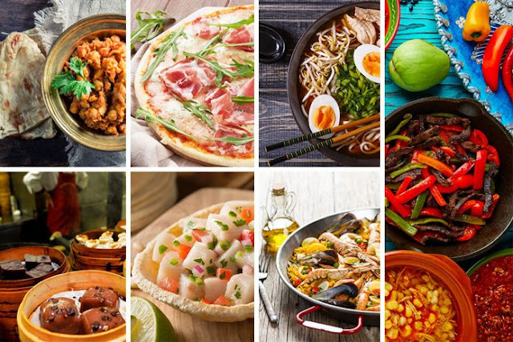

¡Bienvenido!
Bienvenido a nuestra web sobre comidas típicas de diferentes culturas. Explora y descubre sabores del mundo.

Cosas buenas de los países
Tailandia
- Una cultura muy rica y cultivada
- Gastronomía excelente
- Naturaleza impresionante
- Gente amable y buen turismo
Grecia
- Buena historia y cultura
- Paisajes y naturaleza increible
- Comida riquísima
- Vida relajada y agradable